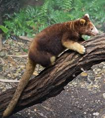
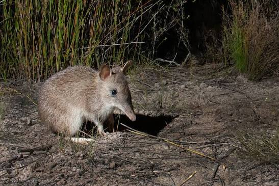
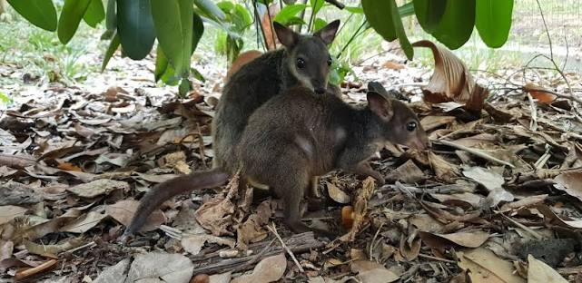

The Mammals of Papua New Guinea
Tree Kangaroo

- The Tree Kangaroo is a unique marsupial found in the rainforests of Papua New Guinea.
It is known for its ability to climb trees and its distinctive appearance.
Giant bandicoot

- The Giant bandicoot is a large marsupial found in the forests of Papua New Guinea.
It is known for its size and unique digging behavior.
Wallaby

- The Wallaby is a small to medium-sized marsupial found in various habitats throughout Papua New Guinea.
It is known for its powerful hind legs and distinctive hopping movement.